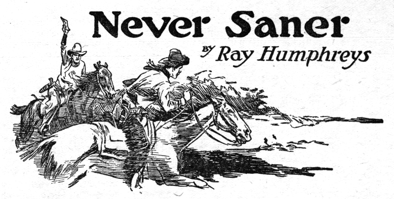

Kapitel 1

Never Saner By Ray HumphreysWith a fierce scowl, Ike threw down his pen, wiped his ink-smeared fingers on his soiled, woolly chaps, and snatched up the piece of hastily scrawled letter paper. He read:
You Worthless Rustler: This is to inform you, Phil Hughes, that I got your number as a good-for-nothing rustler, and you’ve been running off my calves for too long to suit me, so I take the law in my own hands and Heaven help you--when we meet, go for your gun, because I intend to plug you with a .45 on sight. Ike Ward.
Grunting, Ike folded the challenge deliberately and then reached for a “Shawnee Cattle Company” envelope, placed the letter inside, licked the flap, and sealed the envelope. “I’m sick and plumb disgusted settin’ here waitin’ for that sheriff to act!” exploded Ike, and he pounded with his huge fist on the freshly sealed envelope. “This’ll show that rustler I ain’t no dumb-bell like the sheriff—and furthermore, I ain’t no sneak. I give him fair warning—I shoots on sight. And Heaven help him—thass all!”
With that off his chest, Ike rose, buttoned the precious letter in his shirt pocket, and, jerking his .45 out of its holster, made for the door. On the threshold he paused and squinted out into the bright morning sunlight. An old tin can twenty yards away attracted his attention. He banged away at it—once, twice, three times—causing the can to roll merrily off.“That’s shooting,” commented Ike, giving himself a figurative slap on the back. “I can plug Phil Hughes as easily—even if he does go for his gun first!” Just the day before, Ike had solved, to his own satisfaction, the mystery of the disappearance of much of his stock. Riding the range back of Old Baldy, on a little-used trail, Ike had come upon Phil Hughes, a neighboring rancher. Hughes was bent over what had been a branding-iron fire. There was a pile of ashes, a few stones black with smoke, and all evidence of a branding party that had been beyond the law. As he watched, Hughes kicked the stones away and mounted his horse, and Ike, wary, pulled his pony back into the timber and allowed Hughes to ride off. “Too bad I didn’t plug him right there,” went on Ike, “just like he was that old stump yonder. He was about that far away——” Ike raised his revolver and pulled the trigger. There was a slight snap, but no report.
“Shucks!” exclaimed Ike, jerking the gun up under his nose to examine it. “Shucks, I’ve busted something!” A minute later, however, he shoved the gun into its holster, and, whistling merrily, he climbed on his patient pony waiting in the shade of the cabin, and thundered off toward Shawnee. It was a warm day, and the pony slacked its gait at every logical point along the road, but Ike urged it on. He had important business in Shawnee, and the sooner he got there the better. He swung off outside of “Galloping” McCabe’s, the gunsmith, and sauntered in, nodding gaily at McCabe. “Looky this weapon,” said Ike, producing his gun.
“I’ll fix it in a few minutes, Ike,” said McCabe. “You wanta drop back or set down and wait ten minutes?” Ike thought for a moment. “Tell you what,” he said, “I’ll drop back here pronto,” and he went out, whistling, and sauntered up the street. He stalked into the deserted post office and dropped his fateful letter into the mail chute and then ducked out and stood for a moment on the sidewalk. Seeing nobody with whom to pass the time of day, he wended his way back to the gunsmith’s. It would be the best of caution, he figured, to stay in close quarters with his shooting iron now, seeing that he had mailed the death challenge to Phil Hughes, who might call for his mail any minute. “Say,” said Galloping as soon as he saw Ike entering, “I’m sure enough grieved, Ike. I guess I was a little too hasty in sayin’ what I did. I can’t fix this here weapon. You’ll have to send it to Denver, and it’ll cost you about two dollars, anyway—mebbe two and a quarter.” “Shucks!” exploded Ike. “I need that gun, too. I got a .38 back to the ranch, but I prefer this baby. Gotta send it to Denver, eh?” “Gotta,” confirmed McCabe. Ike paused and stroked the two-day’s beard on his chin and pondered. Yes, he’d better get the gun fixed right away. “All right, Galloping, send it down to Denver,” he ordered finally, “and be sure and tell ’em to rush it. I may need it any day. I got a coyote I have to kill.” “All right,” said Galloping. “Say, I can loan you a rifle!” “Rifle wouldn’t do,” said Ike; “anyway, I’m in a hurry. Guess I’ll go on home—and tell ’em to rush that gun!” “Sure,” said McCabe. Ike, his mind set on getting home as soon as possible and establishing close relations with his other gun, nevertheless did not care to give Galloping the wrong impression. “Got two sick calves at home,” Ike explained glibly. “S’long,” said McCabe.
Ike thereupon stepped out of the gunsmith’s. His pony, at the tie rail, raised inquisitive ears. This usually caused Ike to grin and holler “Yep, it’s me!” but Ike didn’t grin this time. He didn’t see his pony at all. His face blanched, and his knees wobbled a bit; his eyes popped. Coming out of the post office, and heading right at him, was nobody but Phil Hughes, the man he had just written, offering to shoot him, gratis, on sight. Instinctively Ike’s right hand shot toward the empty holster, his fingers itching for the familiar butt that wasn’t there. Ike’s jaw drooped, and his heart began to thump so hard he feared that it would break through his ribs. Here was a situation he had not figured on. The fateful line in his letter danced before his dizzy eyes: “When we meet, go for your gun, because I intend to plug you with a .45 on sight!” He noticed, too, that Phil had his hardware on. Ike was a quick thinker. Now, face to face with certain death, his mind grasped for an out— “If I get up as close as I can to the post office,” he thought, “if I can get up there, perhaps Phil will be afraid to draw on me in plain sight of somebody who might be there.” Ike strode up the street toward Hughes. And, just as luck would have it, before the perspiring Ike reached Hughes, old Pete Carr, the sheriff, stepped out of the barber shop. Never did Pete’s star look brighter or bigger—or nicer—to Ike than it did right at that moment. The sheriff nodded to Phil, and Phil stopped. “As long as Pete stays, I’m safe,” decided Ike, running a sleeve across his dripping forehead. “Hughes dassent shoot me in plain sight o’ the sheriff.” Ike breezed up.
“Well,” said the sheriff with a satisfied chuckle, “I got news for you boys. I just put Tequila Joe in jail; figger he’s been rustling a lotta cattle offen these ranges——” “Yes?” asked Ike. “Yes?” repeated Hughes. “Yep,” said Carr, “got him safe in the hoosegow, where he’ll stay until he admits he’s guilty!” The sheriff ambled off. Ike’s face went white again. Once more his fingers itched for the gun that wasn’t in his holster. Here he stood, chin to chin with the man he had just challenged to a gun fight, and he had no gun! Undoubtedly Hughes was merely waiting for the sheriff to get out of sight before he began hostilities. Flight, ignominious as it was, perhaps might be the best. Mebbe Hughes wasn’t the rustler, but what of that? A challenge was a challenge. “You know,” drawled Hughes, boring Ike with his cool blue eyes, “I sorta suspected you might be mixed up in this rustling, Ike, when nobody around here seemed to know who was guilty—and especially since I found a branding fire over near Baldy only yesterday.” Ike glared back. “Yes,” he exploded, “an’ I suspected you, Hughes, and you know it. I stand by every word I——” Hughes, still watching Ike, reached now for his hip—and Ike, casting ceremony to the four winds, swallowed the rest of his speech, spun on his heel, and fled pell-mell for the tie rack a few yards off. He reached his startled pony in four or five great jumps, somehow got the reins loose, and vaulted into the saddle. “Hey, Ike!”
But Ike paid no attention. Leaning low over his pony’s neck, he stuck his spurs in the flanks and away he went. Just one thought surged through his mind—to get home darn quick, grab his old .38, and turn to do Hughes battle. If Hughes wasn’t the rustler, so much the worse; he had challenged Hughes to deadly combat, and an innocent man can be insulted much easier than a rustler. Hughes had already started to draw, anyway. For the first few jumps of the frenzied horse Ike momentarily expected to hear a report and feel a hot stab of pain in his back—but no! There was no report, no hot stab of pain. Up the road went Ike at breakneck speed. A quarter mile—a half mile—why, if he had this pony at the Monte Vista rodeo he could cop off all the prizes—Ike’s mind began to clear. He straightened in his saddle and took a hasty glance over his shoulder. Sure enough, a horseman was in pursuit. Through the dust Ike couldn’t make out the rider. “It’s Hughes,” he told his pony, his lips almost at the horse’s ears. “Run, gol durn you, run!”